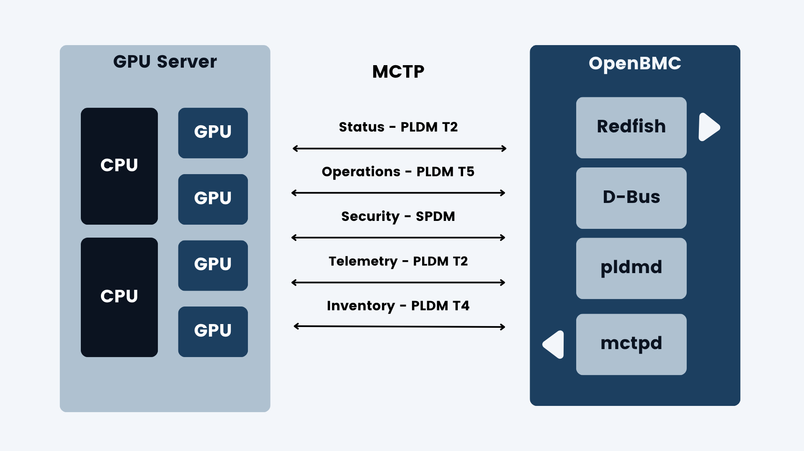
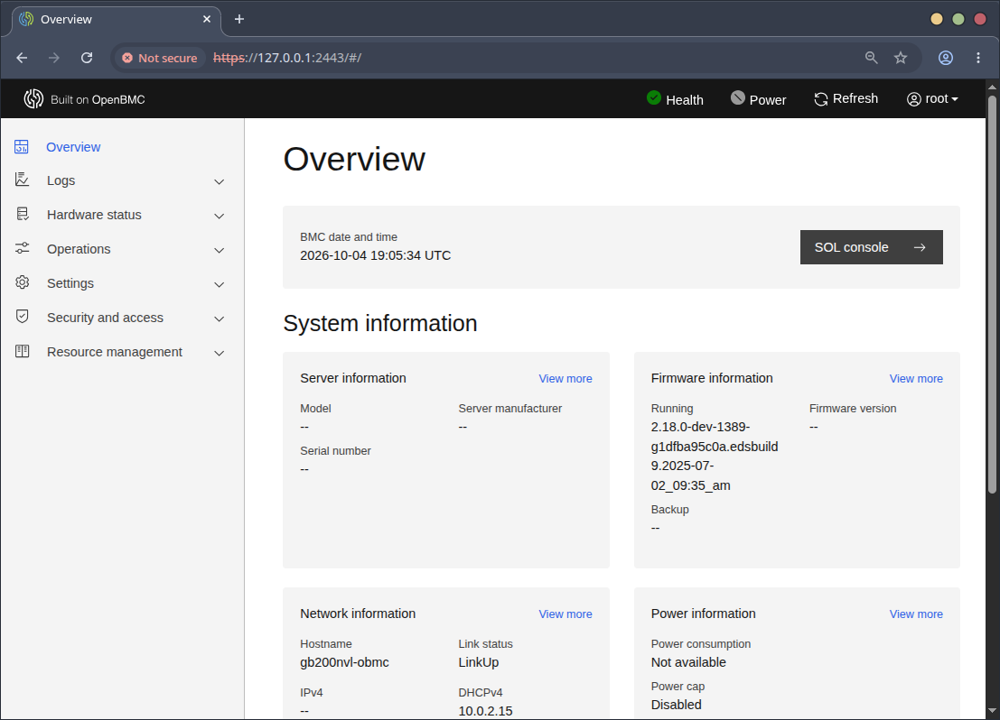

OpenBMC and Redfish on GB200
If a GPU node crashes in the forest, OOB is there to hear it. Out-of-band (OOB) management is the layer of control and telemetry that sits alongside training and inference racks in a server fleet.
Some definitions first, then hands-on with OpenBMC: the GB200 firmware image, running on an x86 lab server via QEMU. Recipe in the appendix.
Definitions
Acronyms abound.
BMC. Baseboard Management Controller. A small, always-on computer on the server motherboard. Monitors and controls the host: power, temperature, fans, firmware flash, serial console. On GB200, it's an ARM SoC from ASPEED.
OpenBMC. An open-source Linux distro for BMCs, built with Yocto. Services ("phosphor" daemons) talk over D-Bus, which is why systemd units have names like xyz.openbmc_project.*.
Redfish. The standard server management API. RESTful HTTPS with JSON, organized as a tree at /redfish/v1/ (Systems, Chassis, Managers, UpdateService). Because it's HTTPS, it works with curl and scripted tooling. In OpenBMC, bmcweb serves it.
MCTP. Management Component Transport Protocol. Management traffic inside the server. Carries messages from the BMC to components (GPUs, NICs, host CPU) over I2C/SMBus, PCIe, or USB. Other protocols ride on top of MCTP.
PLDM. Platform Level Data Model. Message types carried over MCTP. Relevant here: Type 2 (platform monitoring: sensors and events), Type 4 (FRU inventory: what's installed), and Type 5 (firmware update). In OpenBMC, pldmd speaks it.
SPDM. Security Protocol and Data Model. Device authentication and signed firmware measurements, also commonly carried over MCTP. The BMC uses SPDM to verify a GPU and its firmware.

The control dashboard
Before we peek under the hood, let's lead with the payoff. This console, served by my emulated GB200NVL BMC, provides out-of-band management of a GB200 node, control and telemetry. Everything but the Blackwells.

The dashboard resembles the 2005-era console for IBM POWER servers, the HMC (Hardware Management Console). I wrote dynamic I/O reassignment for that platform (rpadlpar): moving PCI slots between running partitions from the HMC. It still ships in mainline Linux 20 years later.
Redfish from the command line
Because Redfish is HTTPS and JSON, we can forgo the browser. Imagine the ease of tooling across racks, clusters, and fleets.
Show us the root:
$ B=https://127.0.0.1:2443
$ AUTH="-u root:0penBmc"
$ curl -sk $AUTH $B/redfish/v1 | jq
{
"@odata.id": "/redfish/v1",
"@odata.type": "#ServiceRoot.v1_15_0.ServiceRoot",
"AccountService": {
"@odata.id": "/redfish/v1/AccountService"
},
"Cables": {
"@odata.id": "/redfish/v1/Cables"
},
"CertificateService": {
"@odata.id": "/redfish/v1/CertificateService"
},
"Chassis": {
"@odata.id": "/redfish/v1/Chassis"
},
"EventService": {
"@odata.id": "/redfish/v1/EventService"
},
"Id": "RootService",
"JsonSchemas": {
"@odata.id": "/redfish/v1/JsonSchemas"
},
"Links": {
"ManagerProvidingService": {
"@odata.id": "/redfish/v1/Managers/bmc"
},
"Sessions": {
"@odata.id": "/redfish/v1/SessionService/Sessions"
}
},
"Managers": {
"@odata.id": "/redfish/v1/Managers"
},
...
}BMC, describe yourself:
$ curl -sk $AUTH $B/redfish/v1/Managers/bmc | jq '{Model, FirmwareVersion, Status, PowerState}'
{
"Model": "OpenBmc",
"FirmwareVersion": "2.18.0-dev-1389-g1dfba95c0a.edsbuild9.2025-07-02_09:35_am",
"Status": {
"Health": "OK",
"State": "Enabled"
},
"PowerState": "On"
}Describe the host you manage:
$ curl -sk $AUTH $B/redfish/v1/Systems/system | jq '{PowerState, BootProgress, Status, Actions}'
{
"PowerState": null,
"BootProgress": null,
"Status": {
"Health": "OK",
"State": "Enabled"
},
"Actions": {
"#ComputerSystem.Reset": {
"@Redfish.ActionInfo": "/redfish/v1/Systems/system/ResetActionInfo",
"target": "/redfish/v1/Systems/system/Actions/ComputerSystem.Reset"
}
}
}Show us what firmware you could track or update:
$ curl -sk $AUTH $B/redfish/v1/UpdateService/FirmwareInventory | jq '.Members'
[
{
"@odata.id": "/redfish/v1/UpdateService/FirmwareInventory/ed5cb8c3"
}
]Take action. Power the system on:
$ curl -sk $AUTH -X POST $B/redfish/v1/Systems/system/Actions/ComputerSystem.Reset \
-H 'Content-Type: application/json' -d '{"ResetType":"On"}'
{
"error": {
"@Message.ExtendedInfo": [
{
"@odata.type": "#Message.v1_1_1.Message",
"Message": "The requested resource of type Set named 'Reset' was not found.",
"MessageArgs": [
"Set",
"Reset"
],
"MessageId": "Base.1.19.ResourceNotFound",
"MessageSeverity": "Critical",
"Resolution": "Provide a valid resource identifier and resubmit the request."
}
],
"code": "Base.1.19.ResourceNotFound",
"message": "The requested resource of type Set named 'Reset' was not found."
}
}In the emulated case there's no host system to power on, hence the error.
Under the hood: flash
Let's begin with the flash partitions as Linux sees them:
root@gb200nvl-obmc:~# cat /proc/mtd
dev: size erasesize name
mtd0: 04000000 00010000 "bmc"
mtd1: 000e0000 00010000 "u-boot"
mtd2: 00020000 00010000 "u-boot-env"
mtd3: 00900000 00010000 "kernel"
mtd4: 02000000 00010000 "rofs"
mtd5: 01600000 00010000 "rwfs"
mtd6: 04000000 00010000 "pnor"MTD stands for Memory Technology Device, the Linux subsystem for raw flash chips. mtd0 and mtd6 are two 64 MiB flash chips. Double-click to get at topology:
root@gb200nvl-obmc:~# for i in 0 6; do echo mtd$i; readlink /sys/class/mtd/mtd$i/device; done
mtd0
../../../spi0.0
mtd6
../../../spi1.0mtd0 "bmc" describes a flash chip with these children. The sizes add up to 64 MiB, or 0x4000000.
| Partition | Size | What it is |
|---|---|---|
u-boot | 0xe0000 · 896 KiB | Bootloader |
u-boot-env | 0x20000 · 128 KiB | Boot variables |
kernel | 0x900000 · 9 MiB | FIT image (kernel + device tree) |
rofs | 0x2000000 · 32 MiB | squashfs root, OpenBMC itself |
rwfs | 0x1600000 · 22 MiB | jffs2, persistent settings |
The last entry, mtd6, describes a second flash chip: PNOR. That's the OpenPOWER term for the host processor's firmware flash, which the BMC can read and write. On GB200 the host is a Grace CPU, and its UEFI firmware lives on a chip like PNOR.
Under the hood: OS
root@gb200nvl-obmc:~# uname -a
Linux gb200nvl-obmc 6.6.95-b97cabd-00457-gb97cabdf9a44 #1 SMP Wed Jul 2 03:20:19 UTC 2025 armv7l GNU/Linux
root@gb200nvl-obmc:~# cat /etc/os-release
ID=openbmc-phosphor
NAME="Phosphor OpenBMC (Phosphor OpenBMC Project Reference Distro)"
VERSION="2.18.0-dev"
VERSION_ID=2.18.0-dev-1389-g1dfba95c0a.edsbuild9.2025-07-02_09:35_am
VERSION_CODENAME="styhead"
PRETTY_NAME="Phosphor OpenBMC (Phosphor OpenBMC Project Reference Distro) 2.18.0-dev"
CPE_NAME="cpe:/o:openembedded:openbmc-phosphor:2.18.0-dev-1389-g1dfba95c0a.edsbuild9.2025-07-02_09:35_AM"
BUILD_ID="20250702162612"
OPENBMC_TARGET_MACHINE="gb200nvl-obmc"
EXTENDED_VERSION="2.18.0-dev-1389-g1dfba95c0a"Kernel 6.6.95 on armv7l: OpenBMC's 6.6 kernel branch on a 32-bit Cortex-A7. OpenBMC 2.18.0-dev on Yocto "styhead", built July 2, 2025 for gb200nvl-obmc.
Under the hood: services
root@gb200nvl-obmc:~# systemctl list-units --no-pager | grep -iE "mctp|pldm|spdm|bmcweb|ipmi|redfish"
bmcweb.service loaded active running Start bmcwebd server
mctpd.service loaded active running MCTP control protocol daemon
phosphor-certificate-manager@bmcweb.service loaded active running Phosphor certificate manager for bmcweb
pldmd.service loaded active running Phosphor PLDM Daemon
xyz.openbmc_project.mctpreactor.service loaded active running MCTP device configuration
bmcweb.socket loaded active running BMC Webserver socket
mctp-local.target loaded active active MCTP local network configuration
mctp.target loaded active active MCTP infrastructure activeThis is the core of the GB200 management stack:
- bmcweb is the Redfish server, the primary out-of-band management interface.
- certificate-manager@bmcweb manages bmcweb's TLS certificate.
- mctpd is the MCTP control daemon. It discovers endpoints and assigns endpoint IDs (EIDs).
- pldmd is the PLDM daemon: sensors, FRU inventory, and firmware update (PLDM Type 5) over MCTP.
Note that IPMI is not running. Intelligent Platform Management Interface is Redfish's predecessor. While IPMI is still common, Redfish is largely replacing it.
Implications
Out-of-band management keeps watch over the GPU fleet. The BMC is an embedded ARM computer running Linux, independent of the host. OpenBMC gives a standard software stack, and Redfish gives standard control: plain HTTPS and JSON that scales from one curl to tooling across a whole fleet.
Every Redfish request becomes D-Bus calls to phosphor daemons. When a GPU, NIC, or CPU is the target, MCTP is the language. The sub-dialects are PLDM for sensors, inventory, and firmware update, and SPDM for device verification.
For now, our emulated BMC has the daemons running but no Blackwell GPUs to talk to. As with SACC, QEMU turns hardware I don't have into something I can boot, poke, and iterate on. For now.
Appendix: GB200 BMC in QEMU
Build QEMU for an ARM target. Use v10.1 or later to get the GB200 machine.
~/src/qemu $ cat ./VERSION
11.1.50
~/src/qemu $ ./configure --target-list=arm-softmmu
~/src/qemu $ make -j8Now QEMU is built to emulate ARM on x86. What machines can we boot? Now entering the museum:
~/src/qemu $ build/qemu-system-arm -machine help
Supported machines are:
anacapa-bmc Facebook Anacapa BMC (Cortex-A7)
ast1030-evb Aspeed AST1030 MiniBMC (Cortex-M4)
...
canon-a1100 Canon PowerShot A1100 IS (ARM946)
...
g220a-bmc Bytedance G220A BMC (ARM1176)
gb200nvl-bmc Nvidia GB200NVL BMC (Cortex-A7)
...
musicpal Marvell 88w8618 / MusicPal (ARM926EJ-S)
...
rainier-bmc IBM Rainier BMC (Cortex-A7)
raspi0 Raspberry Pi Zero (revision 1.2)
...
romulus-bmc OpenPOWER Romulus BMC (ARM1176)
...
supermicro-x11spi-bmc Supermicro X11 SPI BMC (ARM1176)
supermicrox11-bmc Supermicro X11 BMC (ARM926EJ-S)
witherspoon-bmc OpenPOWER Witherspoon BMC (ARM1176)
...
yosemitev2-bmc Facebook YosemiteV2 BMC (ARM1176)Note the distinction between QEMU devices, like my synthetic PCIe accelerator, and machines. The ARM-powered machines include a Canon PowerShot camera and a Marvell MusicPal music player. Stepping up to BMC machines, Facebook, ByteDance, and Supermicro have custom BMCs for their servers. IBM's Rainier BMC, for POWER10, is a descendant of the servers I worked on.
Let's get to today's belle of the ball: gb200nvl-bmc.
Boot QEMU as the GB200NVL BMC.
$ build/qemu-system-arm -machine gb200nvl-bmc -nographicOn first run, the CPU fan spins with no output. It's not enough to ask QEMU for the physical BMC machine; we need an OpenBMC firmware image. Cédric Le Goater of Red Hat maintains a repo with many such images: legoater/qemu-aspeed-boot.
The GB200 image is our golden ticket: obmc-phosphor-image-gb200nvl-obmc-20250702182348.static.mtd.xz
$ build/qemu-system-arm -machine gb200nvl-bmc -nographic \
-drive file=/home/jnros/bmc/obmc-phosphor-image-gb200nvl-obmc-20250702182348.static.mtd,format=raw,if=mtd,snapshot=on \
-nic user,hostfwd=tcp:127.0.0.1:2222-:22,hostfwd=tcp:127.0.0.1:2443-:443,hostfwd=udp:127.0.0.1:2623-:623Port forwards: SSH on 2222, HTTPS (Redfish and the web console) on 2443, IPMI on 2623. A flurry of activity, and we're watching Linux boot:
U-Boot 2019.04 (May 23 2025 - 06:46:26 +0000)
## Loading kernel from FIT Image at 83000000 ...
Verifying Hash Integrity ... sha256+ OK
## Loading ramdisk from FIT Image at 83000000 ...
Verifying Hash Integrity ... sha256+ OK
## Loading fdt from FIT Image at 83000000 ...
Type: Flat Device Tree
Verifying Hash Integrity ... sha256+ OK
Phosphor OpenBMC (Phosphor OpenBMC Project Reference Distro) nodistro.0.edsbuild9.2025-07-02_09:35_AM gb200nvl-obmc ttyS4
gb200nvl-obmc login: